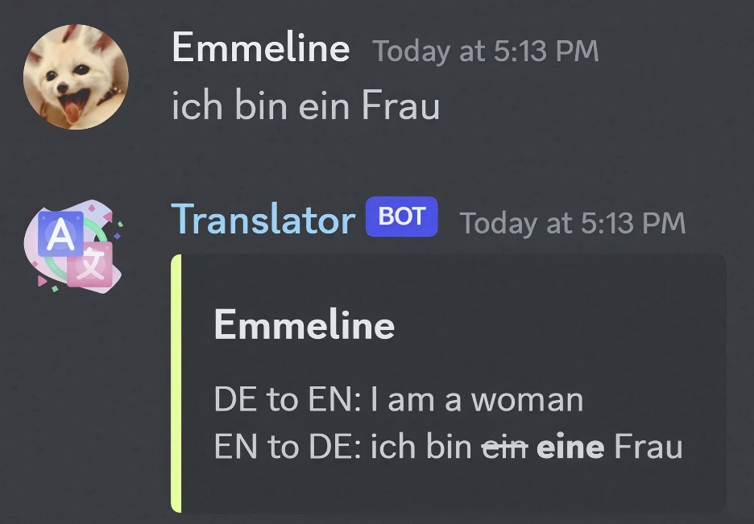
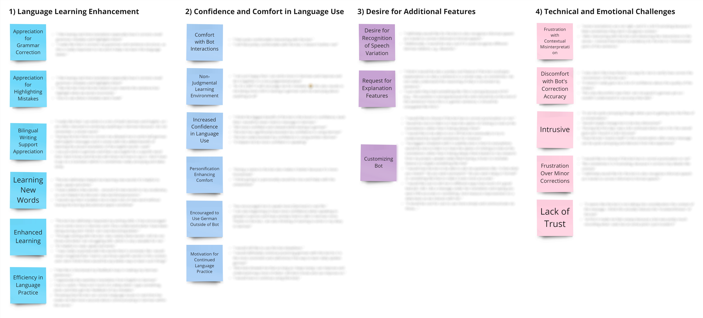
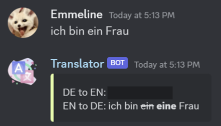
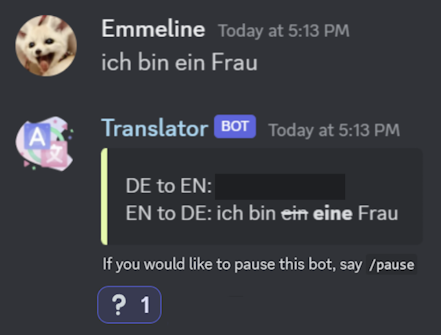
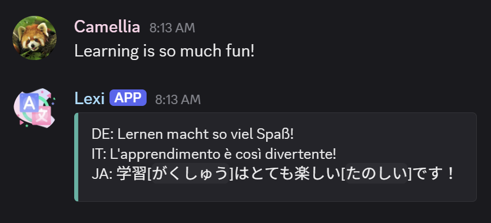
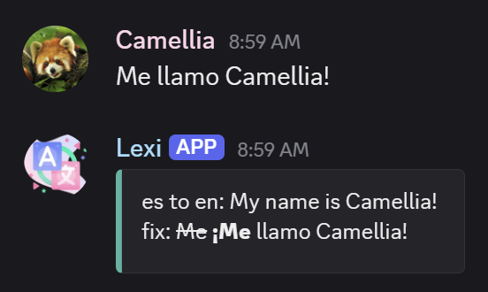
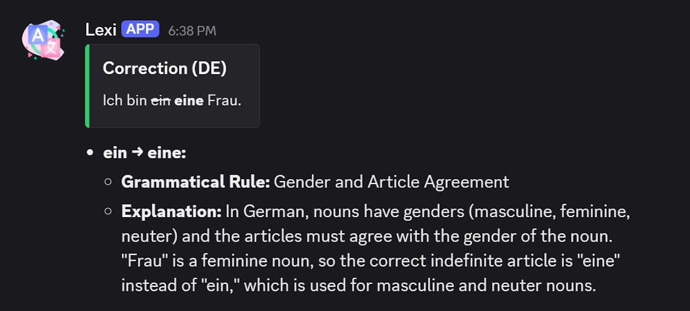

Lexi: A Context-Aware Bot for Supporting Language Learning

Translation icon from
Freepik
As part of my Advanced Contextual Interfaces course in the fall and winter of 2023/2024, I independently designed, developed, and evaluated a translation assistant bot named "Lexi" that provided corrective feedback to German learners during real-time conversations in a Discord server. Lexi acted as a technology probe—a simple, functional prototype intended to spark reflection and uncover design opportunities. Over the course of a week, participants chatted in a shared space and privately shared their thoughts in response to diary prompts I provided. Thematic analysis of these reflections gave me valuable insight into how Lexi was helpful and when it felt too intrusive. Based on these insights, I proposed both context-aware adaptations and non-context-aware refinements to enhance the user experience of the bot. After the course ended, I continued to develop Lexi further, expanding its capabilities well beyond the original prototype.
PROBLEM
Getting feedback while practicing a language is challenging
Feedback provided during conversational interaction facilitates foreign language acquisition [1], yet many language learners face challenges with receiving such feedback. Human tutors can be costly [2], and conversations with corrective AI alone may lack the fulfilling aspects of human-to-human interaction [3, 4, 5].
SOLUTION
A correction tool that supports learning in human-to-human interactions

A screenshot of the front end of the original technology probe for Lexi (called “Translator” in the initial prototype).
I developed a translation assistant bot named Lexi to explore how real-time corrective feedback influences language learning in live group conversation. Lexi is hosted on Google Cloud and supports learners directly within a shared Discord server, detecting whether a message is written in German or English using the Google Translate API. If a message is in German, it provides an English translation to help users verify their understanding and facilitate communication between each other, especially if they only know English, not German, well. It then returns a grammatically correct version of the original message, marking mistakes and possibly offering a more natural alternative. English messages are also translated into German, helping learners pick up new language through expressions that are personally meaningful to them.
While the version of Lexi shown above was used in the original study, I continued to refine and expand it after the course ended by adding new features and more advanced technologies. These enhancements are discussed later in the Post-Study Enhancements section.
METHODS
Probing for insight through live interactions and diary reflections
Although Lexi worked as intended, the broader goal of the course was to investigate how tools like this can better respond to people’s needs in context. This setup served as a technology probe—a simple, functioning prototype designed to reveal insights through use [6]. To understand how learners experienced it in practice, I conducted a one-week diary study with nine German learners. While participants chatted in a shared Discord channel, Lexi provided corrections and translations in real time. They responded to diary prompts encouraging them to reflect on the bot’s functionality, their emotional responses, and how the feedback influenced their relationship with the language.
ANALYSIS & FINDINGS
Uncovering key patterns and emotional tensions

An affinity diagram of the themes and codes determined by thematic analysis with censored participant quotes.
I conducted a thematic analysis of the diary entries, organizing reflections into a spreadsheet and later mapping them into an affinity diagram using Miro. This process helped surface recurring tensions, desires, and emotional reactions. Six out of nine participants submitted diary entries on multiple days, offering a valuable longitudinal view into how their perceptions evolved over time.
Many learners described Lexi as helpful and confidence-boosting. They appreciated receiving immediate feedback, especially for grammar and word choice. Some mentioned that seeing their mistakes corrected helped them better understand sentence structure and notice patterns in their writing. Lexi’s ability to handle messages that mixed German and English made it easier for learners to participate without fear of making mistakes. Others mentioned that it removed the need to switch to external tools like translators, streamlining the learning process. A few even reported feeling more motivated to write and speak German regularly outside of using the bot, noting improved comfort and reduced anxiety when using the language.
Despite these benefits, several participants found Lexi intrusive at times, particularly when many people were chatting at once. Some wished they could turn off or hide its feedback temporarily, or at least choose when to see it. Others wished for brief explanations behind Lexi’s corrections. These insights pointed to a need for context-aware adaptations that could preserve the benefits of real-time feedback while giving users more control and reducing disruptions. This became the basis for my redesign.
DESIGN MODIFICATIONS
Designing adaptive feedback that respects the flow of conversation
Based on user feedback, I designed two types of modifications: general interface refinements and context-aware behaviors that adapt based on conversation activity levels. As I developed these changes, I was mindful of both ethical and technical constraints. I chose not to design a fully personalized system, as that may have required ethically questionable data collection and user tracking. Instead, I focused on adaptations that respected user privacy, aligned with Discord’s technical constraints, and still responded meaningfully to social and conversational contexts.
General Improvements

Lexi hides translations by default and removes usernames from corrections to reduce visual clutter and support focused learning.
- Click-to-reveal translations: English translations are hidden by default using Discord’s
||text|| formatting, which conceals the text until the user clicks to reveal it. This feature was requested by participants, and it reduces visual clutter and supports learners who prefer to quiz themselves on meaning before checking.
- Streamlined feedback layout: Lexi no longer displays usernames in its correction messages as this added little value and removing them made corrections less visually overwhelming.
Context-Aware Adaptations

Lexi adapts to the flow of conversation by providing explanations of corrections in response to ❓ reactions and suggesting pauses during high activity.
- Adaptive explanation lengths: When a user reacts to a correction with the ❓ emoji, Lexi uses GPT-4 to generate an explanation of corrections. If conversation activity is high, the explanation defaults to a shorter version. Users can request longer versions of explanations, and Lexi remembers this preference over time.
- Disruption-aware reminders: When the message volume passes an overload threshold, Lexi occasionally and discreetly reminds users that they can temporarily pause it using the "
/pause" command.
Many of the context-aware features described above were conceptual redesigns based on study findings. However, only a few—such as the removal of usernames and on-demand explanations of mistakes powered by large language models—were implemented afterwards during my spare time.
POST-STUDY ENHANCEMENTS
Lexi became my daily language buddy
After the initial user study and context-aware redesign, I kept refining Lexi in my spare time to support my own daily language practice. These updates came from personal use: chatting in different languages, making mistakes, and noticing what would help me improve. Over time, Lexi became an essential part of my learning journey and one of the ways my friends and I stay close, share joy, and grow together across languages.
Key enhancements include:
- Multilingual Feedback: Lexi supports all languages recognized by Google Translate and GPT-4o, and adds furigana for Japanese and pinyin for Chinese to aid reading and pronunciation.
- Large Language Model Integration: Lexi uses GPT-4o to provide accurate corrections, natural translations, and complementary human-AI interactions that support and enrich language exchange between people.
- On-Demand Explanations: Typing and sending “e” triggers the generation of a detailed explanation of the corrections made to the user’s most recent message, which is automatically posted in a private feedback channel to prevent clutter.
- Flashcard Export: Corrections can be saved as CSV files and imported into tools like Anki—ideal for spaced repetition and long-term learning.

Lexi translates an English message into German, Italian, and Japanese, demonstrating its multilingual capabilities.

Lexi corrects a grammatical error in a Spanish message.

Upon user request, Lexi sends an AI-generated explanation of a German mistake to a private channel.
REFLECTIONS & LESSONS LEARNED
Lessons from independent research, design, and development
This project gave me the opportunity to carry out a UX research and design process from start to finish entirely on my own—from building Lexi and structuring the study to analyzing data and proposing design refinements. It strengthened my ability to work independently while staying grounded in user insight, ethical thinking, and technical constraints.
Designing for adaptivity pushed me to think more carefully about timing, user agency, and emotional experience. It also challenged me to find creative ways of making the system feel responsive without relying on complex tracking. I learned to question what kinds of data are truly necessary to improve the experience and when simplicity and respect for boundaries should take priority.
Key takeaways from the process:
1. Designing context-aware systems starts with careful listening.
Instead of guessing what kind of context the system should respond to, I let participants’ reflections reveal what kinds of friction or needs emerged from real-world use. This shaped my understanding of what adaptations would actually matter. In future projects, I plan to continue listening closely to real users and letting their experiences shape my designs.
2. Longitudinal feedback can reveal deep design insights.
Reviewing diary entries over time gave me insight into how participants’ emotions and expectations evolved. This longitudinal approach helped me move beyond surface-level feedback and notice recurring tensions that informed meaningful design decisions. Such an approach helped me identify design opportunities that would have been easy to miss in a one-off survey or interview.
3. Constraints can sharpen priorities.
Working within privacy and resource limitations helped me focus on changes that were both feasible and meaningful to users. Instead of aiming for a fully personalized system, I looked for ways to improve the experience without asking for more data than necessary. This reinforced the idea that thoughtful, well-scoped adaptations can often go further than complex ones—and that constraints can clarify what’s worth building.
4. Ambiguity is part of the process and worth embracing.
Making decisions on my own meant leaning into uncertainty more than I was used to. This taught me to become more comfortable with ambiguity, trust my judgment, and keep moving even when the path was not always clear.
FULL REPORT
A detailed account of my research methods, data analysis, and design decisions can be read here.
Additionally, a poster for this project can be viewed here.
REFERENCES
- [1] Alison Mackey. 2006. Feedback, Noticing and Instructed Second Language Learning. Applied Linguistics 27, 3, 405–430. DOI: https://doi.org/10.1093/applin/ami051.
- [2] Hao Zheng, Rob K. Marjerison, and Oliver R. Keels. 2021. Shopping for an English Language Tutor. In José M. Sáiz Álvarez and Beatriz Olalla-Caballero (Eds.), Quality Management for Competitive Advantage in Global Markets, 232–248. IGI Global, Hershey. DOI: https://doi.org/10.4018/978-1-7998-5036-6.ch013.
- [3] José Belda-Medina and José R. Calvo-Ferrer. 2022. Using Chatbots as AI Conversational Partners in Language Learning. Applied Sciences 12, 17, 8427. DOI: https://doi.org/10.3390/app12178427.
- [4] Laura Jones. 2023. Learning Languages: Human or AI? Insights from a Recent Survey. Retrieved December 29, 2023, from https://www.lingoda.com/en/p/research/future-language-learning-human-ai/.
- [5] Anne Zimmerman, Joel Janhonen, and Emily Beer. 2023. Human/AI Relationships: Challenges, Downsides, and Impacts on Human/Human Relationships. AI Ethics. DOI: https://doi.org/10.1007/s43681-023-00348-8.
- [6] Hilary Hutchinson, Wendy Mackay, Bo Westerlund, Benjamin B. Bederson, Allison Druin, Catherine Plaisant, Michel Beaudouin-Lafon, Stéphane Conversy, Helen Evans, Heiko Hansen, Nicolas Roussel, and Björn Eiderbäck. 2003. Technology probes. In CHI 2003: New Horizons—Proceedings of the Conference on Human Factors in Computing Systems, 5(1). ACM Press, New York, NY, 17–24. DOI: https://doi.org/10.1145/642611.642616.